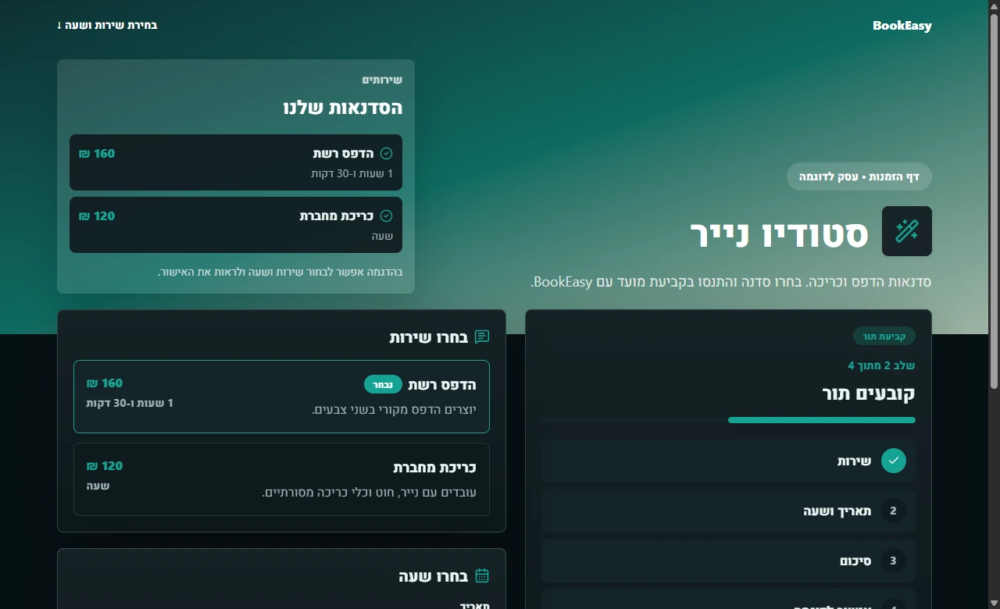

קביעת תורים · הדגמה מקומית
BookEasy
בחרו סדנה, מצאו שעה פנויה וראו את האישור שמקבל הלקוח.
- בחירת שירות ותאריך מעדכנת את רשימת השעות. עמוד ההזמנה מציג את הבחירה לאורך התהליך.
- לאחר אישור מוצג סיכום עם השירות, התאריך והשעה.
ממשק ההזמנות המקורי של BookEasy פועל כאן עם לוח שעות לדוגמה. האישור נשאר בהדגמה.
פתיחת ההדגמה